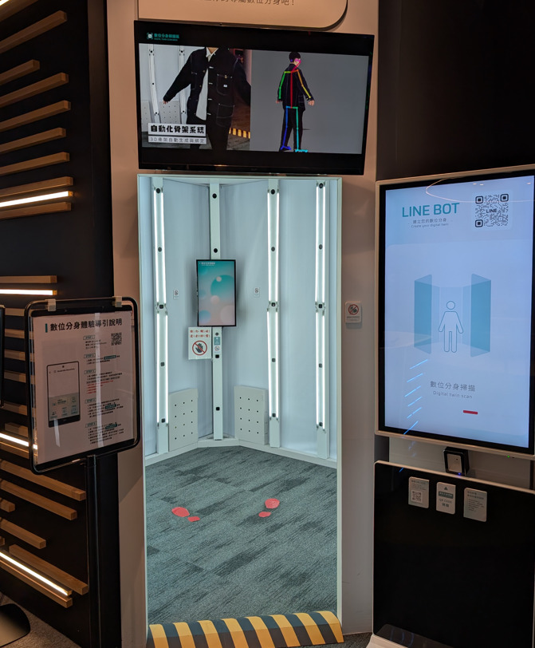
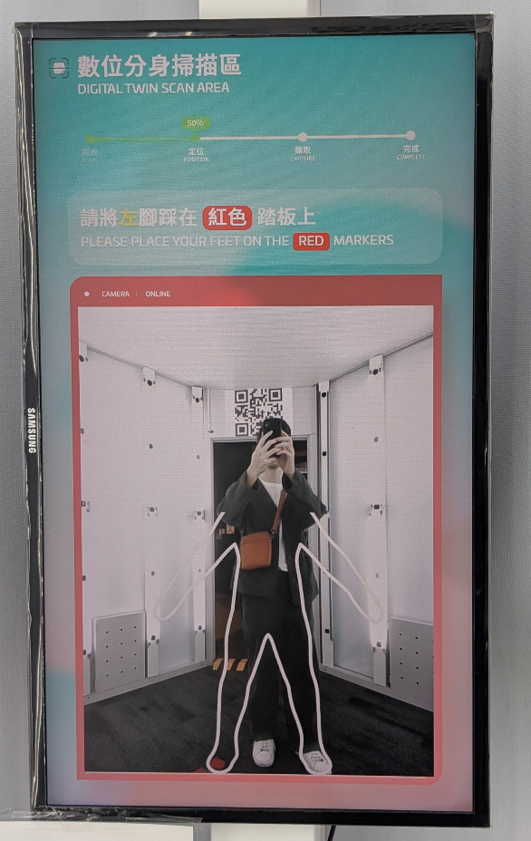
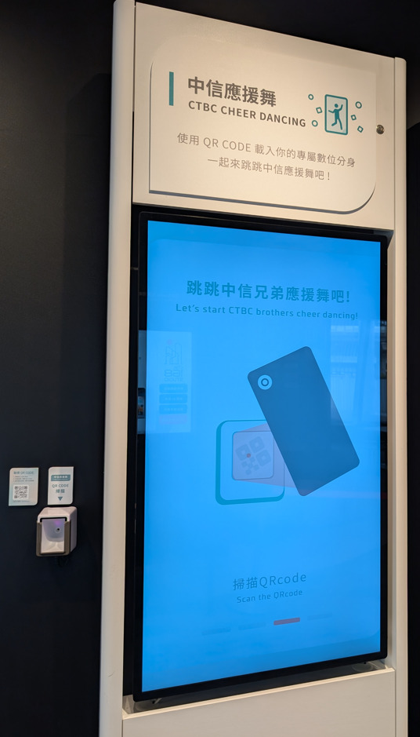
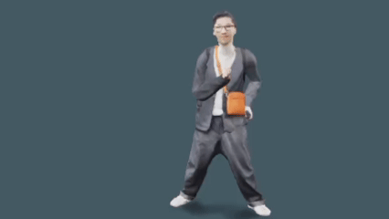
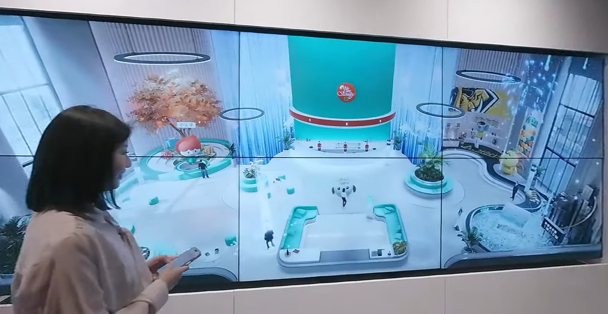

CTBC: Banking Everywhere (2023)
- interactive virtual banking experience -
Overview
CTBC: Banking Everywhere was designed as an exhibition to showcase the future of digital banking. The project leveraged the concept of a digital twin, allowing users to immerse themselves in technology and experience a seamless, virtual banking environment. Within this futuristic setting, customers could explore financial services in an engaging and interactive way, highlighting how digital innovation can transform the banking experience.
My Role
Contributing as an Art Director, my focus was on shaping the visual design of both the virtual bank environment and the interactive cheer-dancing sequence. I ensured the aesthetics aligned seamlessly with CTBC’s branding while pushing the boundaries of traditional banking interfaces into a more engaging, spatial experience. In addition, I coordinated with in-house artists to maintain consistency across all assets, ensuring the visuals shared a unified style and cohesive look throughout the project
Highlights
- Developed virtual bank environment with interactables.
- Design the UI for the digital twin scanning process.
- Created the cheer dance sequence.
- Optimized real-time rendering performance for large-scale displays.
Art & Process

IIn this project, users digitally scanned themselves to create a personalized avatar, which they could then see on-site through a large display. Using their phones, participants navigated their digital twin through the virtual bank, interacting with objects and completing tasks. The experience also included a playful feature where users could activate a cheer-dance sequence, seeing their avatars perform for the baseball team as a lighthearted moment.
As Art Director, I designed and developed the look of the virtual bank, ensuring it adhered to CTBC’s established branding guidelines for strong recognition. I chose white as the base color and divided the bank into major sections, each dedicated to different interactables and themes. This clean, minimal design proved highly effective, allowing users to navigate the environment intuitively while reinforcing the futuristic yet approachable identity of the brand.






Gallery
Project Details
Type: Interactive Exhibition / Virtual Showroom
Year: 2023
Client: CTBC Bank
Tools & Tech: Unity Engine, Photoshop, Maya